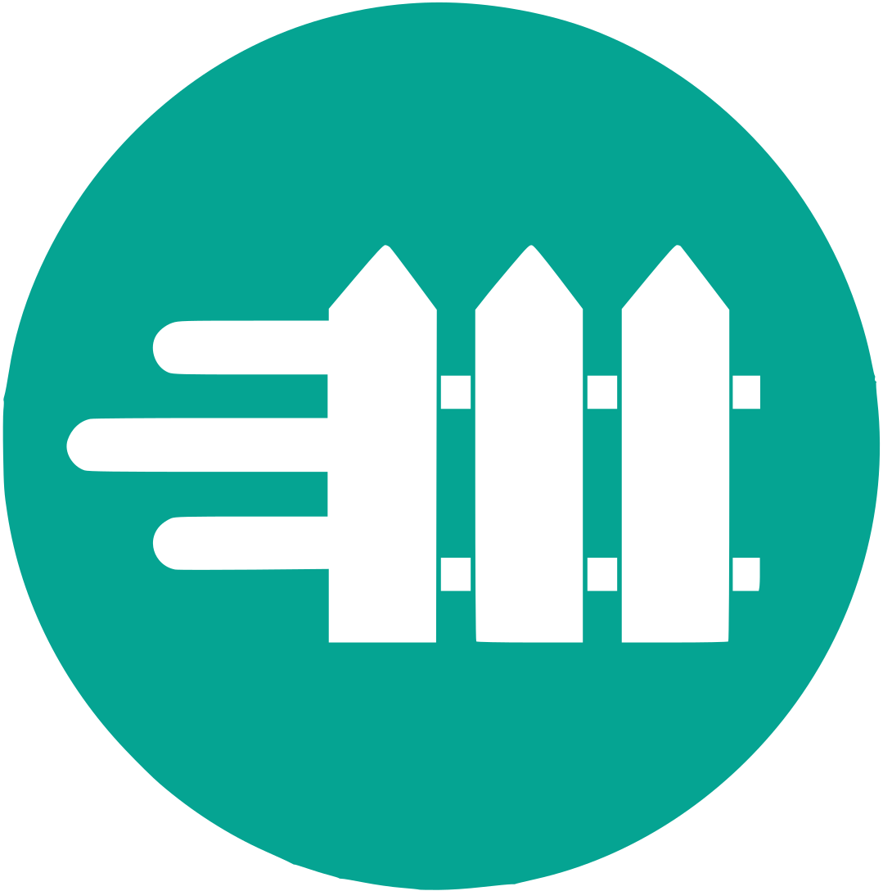

Development version — unreleased
This code may differ from the package available on PyPI. Stable documentation. Commit 01f17389f572.

FastFence¶
Security policies for agents. Local enforcement for every call.
FastFence checks AI requests and responses against your access, privacy, text and resource policies. Connect through REST, an OpenAI-compatible endpoint, MCP or a configured ACP peer. Describe a rule with Laya, review its changes and tests, then activate it without restarting the gateway.
Get started Follow a tutorial HTTP API reference
Start locally¶
With uv installed and Ollama running, execute this in your chosen working directory:
FastFence 1.0.2 or later prepares the required runtime and starts the gateway with one command. It creates private configuration, installs Laya, downloads the configured assessor if missing and prepares OCR when needed. The fresh default uses Qwen3:4b for assessment and completion in separate calls; no second model is needed.
Open http://127.0.0.1:8000 and connect using the credentials in state/credentials.json. Keep using the same working directory: configuration and keys stay there, while uv caches the package separately. If uv has an older release cached, use uv tool run fastfence@latest.
No source checkout or manually activated environment is required. The installation guide covers prerequisites, exact-version commands and updates.
Choose your task¶
| I want to… | Start here |
|---|---|
| Run a protected model request | Learn: your first request |
| Describe a rule and understand how it changes behavior | Policies and review |
| Connect an existing agent or MCP client | Integration contract |
| Connect a peer agent through ACP | ACP agent-to-agent example |
| Configure privacy, anonymization or budgets | Policy configuration |
| Find an endpoint or request schema | Source-backed HTTP reference |
| Configure a local installation | Environment settings |
| Verify the system myself | Manual verification |
| Run framework integration code | Executable examples · OpenAI SDK |
| Give an LLM the documentation | llms.txt · llms-full.txt |
How it works¶
An authenticated request passes through access checks, input controls and budget reservation before the upstream operation runs. FastFence then checks the response and records a sanitized decision. Fast deterministic checks run locally. The default product configuration also uses Laya for semantic input and output inspection of content that reaches that stage; unavailable analysis fails closed.
Laya has two separate roles. On the management path it drafts bounded rules that become fast local checks after review. On the runtime path it assesses content against security guidance and your natural-language semantic policy. Compiled text matching itself needs no model call, while enabled semantic inspection does.
Policies can reload from local files or a trusted HTTP configuration source. Invalid updates keep the last valid configuration. A proposed change is separate from an active policy: inspect the diff, verify expectations and explicitly publish it.
Runtime boundaries¶
The local product starts without simulated business tools. Runnable business-tool examples are separate from the default runtime. Model execution requires an allowlisted model on the configured Ollama or OpenAI-compatible upstream. OCR converts supported documents into policy-checked Markdown; it does not edit images or PDFs.
Budgets and bounded audit logs are process-local and reset on restart. Reversible anonymization uses authenticated tokens and local keys, with explicit permission to restore originals. An output denial cannot undo an upstream operation that has already run. See architecture for the trust and deployment boundaries.
FastFence is Apache-2.0 licensed.